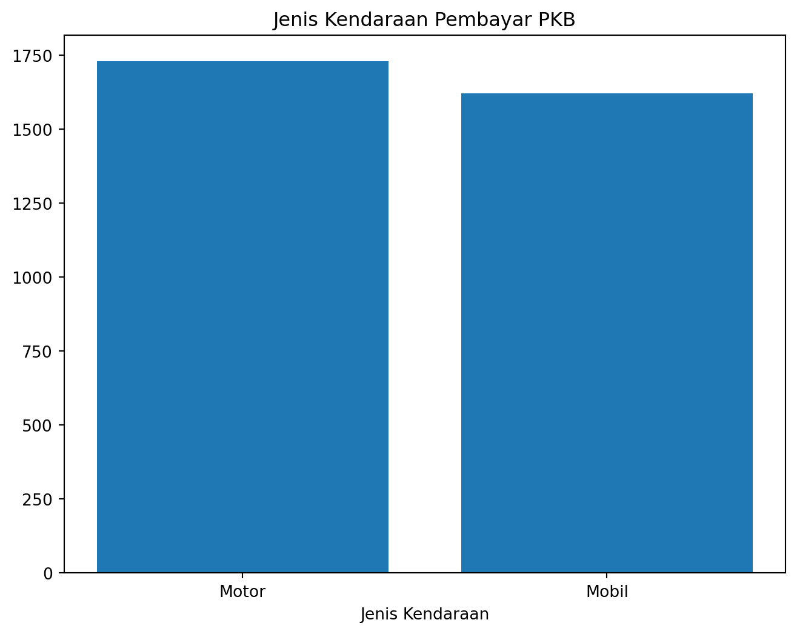
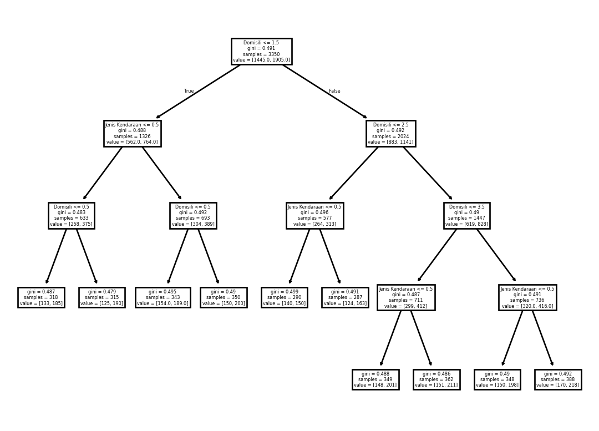

import pandas as pd
import numpy as np
import matplotlib.pyplot as plt
import seaborn as sns
import warnings as wr
wr.filterwarnings('ignore')
from sklearn import tree
from sklearn.tree import DecisionTreeClassifier
def show_data(df, row=5):
print(f'ukuran data: {df.shape}')
display(df.head(row))
def get_missing_data_summary(df):
temp = df.isnull().sum().reset_index()
temp.columns = ['col_name', 'num_missing']
temp['col_type'] = df.dtypes.values
temp = temp.sort_values(by = 'num_missing', ascending = False)
temp['num_missing_percent'] = round(temp['num_missing'] / len(df) * 100, 2)
return(temp)Analisis Data PKB
I. Analisis Data PKB
Business Insight
- Tren domisili, merk, dan jenis kendaraan bermotor terhadap kewajiban membayar pajak
- Frekuensi pengguna kendaraan bermotor yang terlambat dan on time dalam kewajiban PKB
Praproses Data
1. Pustaka and fungsi diimpor
Tahap awal praproses data adalah dengan memuat pustaka python yang dibutuhkan dan membuat user-defined function sebagai alat untuk inspeksi awal data.
2. Data dimuat
df_payment = pd.read_csv("dataset/pembayaran.csv")
show_data(df_payment)ukuran data: (3869, 4)| Nopol | Tgl Bayar | Bayar | Denda | |
|---|---|---|---|---|
| 0 | B5944XYZ | 2018-04-19 | 1525111 | 381277 |
| 1 | B5944XYZ | 2018-08-31 | 1525111 | 0 |
| 2 | B5944XYZ | 2020-01-03 | 1525111 | 381277 |
| 3 | B5944XYZ | 2020-10-05 | 1525111 | 0 |
| 4 | B5944XYZ | 2021-06-19 | 1525111 | 0 |
# mengubah tipe kolom tanggal bayar
df_payment['Tgl Bayar'] = pd.to_datetime(df_payment['Tgl Bayar'])df_payment.nunique()Nopol 950
Tgl Bayar 2150
Bayar 999
Denda 752
dtype: int64Data pembayaran.csv berisi 3869 data transaksi pembayaran pajak kendaraan bermotor dengan 4 atribut atau variabel sebagai berikut:
Nopol: Nomor plat kendaraan bermotorTgl Bayar: Tanggal pembayaran pajak kendaraan terkaitBayar: Nominal pembayaran berdasarkan PKB PokokDenda: Nominal denda keterlambatan pembayaran PKB
Dari seluruh amatan tersebut terdapat sejumlah 950 kendaraan bermotor unik yang telah melakukan transaksi.
df_profil_op = pd.read_csv("dataset/profil_op.csv")
show_data(df_profil_op)ukuran data: (1000, 9)| Nopol | Domisili | Tgl Daftar | Tgl Keluar | Jenis Kendaraan | Merk Kendaraan | Tipe Kendaraan | Jenis Bahan Bakar | PKB Pokok | |
|---|---|---|---|---|---|---|---|---|---|
| 0 | B5944XYZ | Jakarta | 2017-05-26 | 2022-06-30 | Motor | Suzuki | Sport | Bensin | 1525111 |
| 1 | B1576XYZ | Bandung | 2017-01-13 | 2017-03-14 | Motor | Kawasaki | Sport | Bensin | 1425635 |
| 2 | B5008XYZ | Bogor | 2016-03-19 | 2020-07-14 | Mobil | Toyota | SUV | n | 1157953 |
| 3 | B2905XYZ | Medan | 2019-02-07 | 2024-04-30 | Mobil | Daihatsu | SUV | n | 882176 |
| 4 | B3578XYZ | Bandung | 2022-02-24 | 2023-04-04 | Motor | Kawasaki | Sport | Bensin | 1626497 |
# mengubah tipe kolom tanggal daftar dan keluar
df_profil_op['Tgl Daftar'] = pd.to_datetime(df_profil_op['Tgl Daftar'])
df_profil_op['Tgl Keluar'] = pd.to_datetime(df_profil_op['Tgl Keluar'])df_profil_op.nunique()Nopol 950
Domisili 5
Tgl Daftar 840
Tgl Keluar 890
Jenis Kendaraan 2
Merk Kendaraan 8
Tipe Kendaraan 2
Jenis Bahan Bakar 6
PKB Pokok 999
dtype: int64Data profil_op.csv berisi 1000 amatan profil kendaraan bermotor dengan 9 atribut atau variabel sebagai berikut:
Nopol: Nomor plat kendaraan bermotorDomisili: Tanggal pembayaran pajak kendaraan terkaitTgl Daftar: Tanggal kendaraan pertama kali terdaftar dalam sistem administrasi kendaraan bermotorTgl Keluar: Tanggal kendaraan dihapus dari sistemJenis Kendaraan: Jenis kendaraan Mobil atau MotorMerk Kendaraan: Merk kendaraan bermotorTipe Kendaraan: Tipe kendaraan SUV atau SportJenis Bahan Bakar: Jenis bahan bakar kendaraanPKB Pokok: Nominal pajak kendaraan pokok
3. Data dibersihkan
Pada kedua data tersebut dapat diidentifikasi atribut unik yang dapat digunakan untuk penggabungan data. Namun sebelum dan sesudah hal tersebut dilakukan perlu adanya:
- pemeriksaan ketepatan tanggal kendaraan terdaftar dan keluar
- pemeriksaan duplikasi data, terutama pada
NopoldanPKB Pokokyang akan dijadikan key untuk join data. - pemeriksaan kategori pada atribut
Jenis Bahan Bakar - pemeriksaan ketepatan tanggal kendaraan terdaftar dan tanggal pembayaran pajak
df_profil_filtered = df_profil_op[df_profil_op['Tgl Daftar'] <= df_profil_op['Tgl Keluar']]
show_data(df_profil_filtered)ukuran data: (953, 9)| Nopol | Domisili | Tgl Daftar | Tgl Keluar | Jenis Kendaraan | Merk Kendaraan | Tipe Kendaraan | Jenis Bahan Bakar | PKB Pokok | |
|---|---|---|---|---|---|---|---|---|---|
| 0 | B5944XYZ | Jakarta | 2017-05-26 | 2022-06-30 | Motor | Suzuki | Sport | Bensin | 1525111 |
| 1 | B1576XYZ | Bandung | 2017-01-13 | 2017-03-14 | Motor | Kawasaki | Sport | Bensin | 1425635 |
| 2 | B5008XYZ | Bogor | 2016-03-19 | 2020-07-14 | Mobil | Toyota | SUV | n | 1157953 |
| 3 | B2905XYZ | Medan | 2019-02-07 | 2024-04-30 | Mobil | Daihatsu | SUV | n | 882176 |
| 4 | B3578XYZ | Bandung | 2022-02-24 | 2023-04-04 | Motor | Kawasaki | Sport | Bensin | 1626497 |
nopol = df_profil_filtered['Nopol']
duplicate_nopol = pd.Series(nopol)[pd.Series(nopol).duplicated()].values
duplicate_nopolarray(['B7049XYZ', 'B5008XYZ', 'B6595XYZ', 'B6508XYZ', 'B4658XYZ',
'B5948XYZ', 'B7329XYZ', 'B9269XYZ', 'B7012XYZ', 'B6689XYZ',
'B4275XYZ', 'B5366XYZ', 'B1611XYZ', 'B3558XYZ', 'B2042XYZ',
'B9337XYZ', 'B3975XYZ', 'B1502XYZ', 'B8227XYZ', 'B5209XYZ',
'B2907XYZ', 'B1874XYZ', 'B3531XYZ', 'B9699XYZ', 'B7266XYZ',
'B2042XYZ', 'B5882XYZ', 'B1631XYZ', 'B1874XYZ', 'B5667XYZ',
'B1733XYZ', 'B9824XYZ', 'B9793XYZ', 'B7212XYZ', 'B3558XYZ',
'B3795XYZ', 'B4552XYZ', 'B7413XYZ', 'B2746XYZ', 'B3462XYZ',
'B7086XYZ', 'B9547XYZ', 'B8417XYZ', 'B2393XYZ'], dtype=object)print(f'Terdapat {len(duplicate_nopol)} duplikasi pada nopol')Terdapat 44 duplikasi pada nopoldf_profil_filtered.groupby(['Jenis Bahan Bakar', 'Jenis Kendaraan']).size().unstack(fill_value=0)| Jenis Kendaraan | Mobil | Motor |
|---|---|---|
| Jenis Bahan Bakar | ||
| B | 87 | 0 |
| Bensin | 0 | 493 |
| e | 64 | 0 |
| i | 89 | 0 |
| n | 162 | 0 |
| s | 58 | 0 |
Terdapat beberapa kategori Jenis Bahan Bakar yang tidak teridentifikasi pada dataset dan semuanya masuk ke dalam kategori Jenis Kendaraan = Mobil, hanya kategori Motor yang dengan jelas menggunakan bahan bakar Bensin. Pada aspek ini tidak menjadi isu karena lebih mudah membedakannya dengan melihat jenis kendaraannya saja.
missing_df_payment = get_missing_data_summary(df_payment)
missing_df_payment| col_name | num_missing | col_type | num_missing_percent | |
|---|---|---|---|---|
| 0 | Nopol | 0 | object | 0.0 |
| 1 | Tgl Bayar | 0 | datetime64[ns] | 0.0 |
| 2 | Bayar | 0 | int64 | 0.0 |
| 3 | Denda | 0 | int64 | 0.0 |
missing_df_profil = get_missing_data_summary(df_profil_filtered)
missing_df_profil| col_name | num_missing | col_type | num_missing_percent | |
|---|---|---|---|---|
| 0 | Nopol | 0 | object | 0.0 |
| 1 | Domisili | 0 | object | 0.0 |
| 2 | Tgl Daftar | 0 | datetime64[ns] | 0.0 |
| 3 | Tgl Keluar | 0 | datetime64[ns] | 0.0 |
| 4 | Jenis Kendaraan | 0 | object | 0.0 |
| 5 | Merk Kendaraan | 0 | object | 0.0 |
| 6 | Tipe Kendaraan | 0 | object | 0.0 |
| 7 | Jenis Bahan Bakar | 0 | object | 0.0 |
| 8 | PKB Pokok | 0 | int64 | 0.0 |
Tabel ringkasan di atas menunjukkan bahwa tidak ada langkah lebih lanjut yang perlu dilakukan, karena kedua tabel tidak memiliki nilai yang hilang pada setiap atributnya.
4. Data digabungkan
df_merged = df_profil_filtered.merge(df_payment, left_on = ["Nopol", "PKB Pokok"], right_on = ["Nopol", "Bayar"], how = "left")
show_data(df_merged)ukuran data: (3814, 12)| Nopol | Domisili | Tgl Daftar | Tgl Keluar | Jenis Kendaraan | Merk Kendaraan | Tipe Kendaraan | Jenis Bahan Bakar | PKB Pokok | Tgl Bayar | Bayar | Denda | |
|---|---|---|---|---|---|---|---|---|---|---|---|---|
| 0 | B5944XYZ | Jakarta | 2017-05-26 | 2022-06-30 | Motor | Suzuki | Sport | Bensin | 1525111 | 2018-04-19 | 1525111 | 381277 |
| 1 | B5944XYZ | Jakarta | 2017-05-26 | 2022-06-30 | Motor | Suzuki | Sport | Bensin | 1525111 | 2018-08-31 | 1525111 | 0 |
| 2 | B5944XYZ | Jakarta | 2017-05-26 | 2022-06-30 | Motor | Suzuki | Sport | Bensin | 1525111 | 2020-01-03 | 1525111 | 381277 |
| 3 | B5944XYZ | Jakarta | 2017-05-26 | 2022-06-30 | Motor | Suzuki | Sport | Bensin | 1525111 | 2020-10-05 | 1525111 | 0 |
| 4 | B5944XYZ | Jakarta | 2017-05-26 | 2022-06-30 | Motor | Suzuki | Sport | Bensin | 1525111 | 2021-06-19 | 1525111 | 0 |
df_final = df_merged[df_merged['Tgl Daftar'] <= df_merged['Tgl Bayar']]
show_data(df_final)ukuran data: (3350, 12)| Nopol | Domisili | Tgl Daftar | Tgl Keluar | Jenis Kendaraan | Merk Kendaraan | Tipe Kendaraan | Jenis Bahan Bakar | PKB Pokok | Tgl Bayar | Bayar | Denda | |
|---|---|---|---|---|---|---|---|---|---|---|---|---|
| 0 | B5944XYZ | Jakarta | 2017-05-26 | 2022-06-30 | Motor | Suzuki | Sport | Bensin | 1525111 | 2018-04-19 | 1525111 | 381277 |
| 1 | B5944XYZ | Jakarta | 2017-05-26 | 2022-06-30 | Motor | Suzuki | Sport | Bensin | 1525111 | 2018-08-31 | 1525111 | 0 |
| 2 | B5944XYZ | Jakarta | 2017-05-26 | 2022-06-30 | Motor | Suzuki | Sport | Bensin | 1525111 | 2020-01-03 | 1525111 | 381277 |
| 3 | B5944XYZ | Jakarta | 2017-05-26 | 2022-06-30 | Motor | Suzuki | Sport | Bensin | 1525111 | 2020-10-05 | 1525111 | 0 |
| 4 | B5944XYZ | Jakarta | 2017-05-26 | 2022-06-30 | Motor | Suzuki | Sport | Bensin | 1525111 | 2021-06-19 | 1525111 | 0 |
5. Rekayasa fitur
Tahapan berikut ini dilakukan rekayasa fitur terhadap ketepatan pembayaran PKB dengan atribut Status Denda = [Ontime, Denda] beserta Durasi Keterlambatan.
df_final['Status Denda'] = np.where(df_final['Denda'] == 0, "Ontime", "Denda")
df_final['Durasi Keterlambatan'] = np.where(df_final['Denda'] == 0,
df_final['Tgl Daftar'] - df_final['Tgl Daftar'],
df_final['Tgl Bayar'] - df_final['Tgl Daftar'])
show_data(df_final)ukuran data: (3350, 14)| Nopol | Domisili | Tgl Daftar | Tgl Keluar | Jenis Kendaraan | Merk Kendaraan | Tipe Kendaraan | Jenis Bahan Bakar | PKB Pokok | Tgl Bayar | Bayar | Denda | Status Denda | Durasi Keterlambatan | |
|---|---|---|---|---|---|---|---|---|---|---|---|---|---|---|
| 0 | B5944XYZ | Jakarta | 2017-05-26 | 2022-06-30 | Motor | Suzuki | Sport | Bensin | 1525111 | 2018-04-19 | 1525111 | 381277 | Denda | 328 days |
| 1 | B5944XYZ | Jakarta | 2017-05-26 | 2022-06-30 | Motor | Suzuki | Sport | Bensin | 1525111 | 2018-08-31 | 1525111 | 0 | Ontime | 0 days |
| 2 | B5944XYZ | Jakarta | 2017-05-26 | 2022-06-30 | Motor | Suzuki | Sport | Bensin | 1525111 | 2020-01-03 | 1525111 | 381277 | Denda | 952 days |
| 3 | B5944XYZ | Jakarta | 2017-05-26 | 2022-06-30 | Motor | Suzuki | Sport | Bensin | 1525111 | 2020-10-05 | 1525111 | 0 | Ontime | 0 days |
| 4 | B5944XYZ | Jakarta | 2017-05-26 | 2022-06-30 | Motor | Suzuki | Sport | Bensin | 1525111 | 2021-06-19 | 1525111 | 0 | Ontime | 0 days |
Exploratory Data Analysis
Analisis Univariate
domisili_counts = df_final['Domisili'].value_counts()
plt.figure(figsize=(8, 6))
plt.bar(domisili_counts.index, domisili_counts)
plt.title('Domisili Pembayar PKB')
plt.xlabel('Kota')
plt.ylabel('Total')Text(0, 0.5, 'Total')
merk_counts = df_final['Merk Kendaraan'].value_counts()
plt.figure(figsize=(8, 6))
plt.bar(merk_counts.index, merk_counts)
plt.title('Merk Kendaraan Pembayar PKB')
plt.xlabel('Merk Kendaraan')
plt.ylabel('Total')Text(0, 0.5, 'Total')jenis_counts = df_final['Jenis Kendaraan'].value_counts()
plt.figure(figsize=(8, 6))
plt.bar(jenis_counts.index, jenis_counts)
plt.title('Jenis Kendaraan Pembayar PKB')
plt.xlabel('Jenis Kendaraan')
plt.ylabel('Total')Text(0, 0.5, 'Total')
Analisis Bivariate
pd.crosstab(df_final['Status Denda'], df_final['Domisili'], margins = True)| Domisili | Bandung | Bogor | Jakarta | Medan | Surabaya | All |
|---|---|---|---|---|---|---|
| Status Denda | ||||||
| Denda | 287 | 275 | 264 | 299 | 320 | 1445 |
| Ontime | 374 | 390 | 313 | 412 | 416 | 1905 |
| All | 661 | 665 | 577 | 711 | 736 | 3350 |
pd.crosstab(df_final['Status Denda'], df_final['Merk Kendaraan'], margins = True)| Merk Kendaraan | Daihatsu | Ford | Honda | Kawasaki | Mitsubishi | Suzuki | Toyota | Yamaha | All |
|---|---|---|---|---|---|---|---|---|---|
| Status Denda | |||||||||
| Denda | 189 | 169 | 229 | 150 | 164 | 198 | 174 | 172 | 1445 |
| Ontime | 217 | 239 | 271 | 210 | 211 | 272 | 257 | 228 | 1905 |
| All | 406 | 408 | 500 | 360 | 375 | 470 | 431 | 400 | 3350 |
pd.crosstab(df_final['Status Denda'], df_final['Jenis Kendaraan'], margins = True)| Jenis Kendaraan | Mobil | Motor | All |
|---|---|---|---|
| Status Denda | |||
| Denda | 696 | 749 | 1445 |
| Ontime | 924 | 981 | 1905 |
| All | 1620 | 1730 | 3350 |
II. Penggunaan AI / Machine Learning
Penerapan Machine Learning pada data di atas dapat menjadi nilai tambah untuk melihat bagaimana tren pelaku pembayaran pajak pada umumnya. Teknik Machine Learning yang digunakan pada kasus ini juga bervariasi, contoh sederhana yang dapat digunakan adalah Pohon Keputusan. Berikut langkah yang harus dipersiapkan:
df_ml = df_final
features = ['Domisili', 'Jenis Kendaraan']
d1 = {'Bandung': 0, 'Bogor': 1, 'Jakarta': 2, 'Medan': 3, 'Surabaya': 4}
d2 = {'Daihatsu': 0, 'Ford': 1, 'Honda': 2, 'Kawasaki': 3, 'Mitsubishi': 4, 'Suzuki': 5, 'Toyota': 6, 'Yamaha': 7}
d3 = {'Mobil': 0, 'Motor': 1}
d4 = {'Denda': 0, 'Ontime': 1}
df_ml['Jenis Kendaraan'] = df_ml['Jenis Kendaraan'].map(d3)
df_ml['Merk Kendaraan'] = df_ml['Merk Kendaraan'].map(d2)
df_ml['Domisili'] = df_ml['Domisili'].map(d1)
df_ml['Status Denda'] = df_ml['Status Denda'].map(d4)
X = df_ml[features]
y = df_ml['Status Denda']
dtree = DecisionTreeClassifier()
dtree = dtree.fit(X, y)
tree.plot_tree(dtree, feature_names = features)[Text(0.4342105263157895, 0.9, 'Domisili <= 1.5\ngini = 0.491\nsamples = 3350\nvalue = [1445.0, 1905.0]'),
Text(0.21052631578947367, 0.7, 'Jenis Kendaraan <= 0.5\ngini = 0.488\nsamples = 1326\nvalue = [562.0, 764.0]'),
Text(0.3223684210526316, 0.8, 'True '),
Text(0.10526315789473684, 0.5, 'Domisili <= 0.5\ngini = 0.483\nsamples = 633\nvalue = [258, 375]'),
Text(0.05263157894736842, 0.3, 'gini = 0.487\nsamples = 318\nvalue = [133, 185]'),
Text(0.15789473684210525, 0.3, 'gini = 0.479\nsamples = 315\nvalue = [125, 190]'),
Text(0.3157894736842105, 0.5, 'Domisili <= 0.5\ngini = 0.492\nsamples = 693\nvalue = [304, 389]'),
Text(0.2631578947368421, 0.3, 'gini = 0.495\nsamples = 343\nvalue = [154.0, 189.0]'),
Text(0.3684210526315789, 0.3, 'gini = 0.49\nsamples = 350\nvalue = [150, 200]'),
Text(0.6578947368421053, 0.7, 'Domisili <= 2.5\ngini = 0.492\nsamples = 2024\nvalue = [883, 1141]'),
Text(0.5460526315789473, 0.8, ' False'),
Text(0.5263157894736842, 0.5, 'Jenis Kendaraan <= 0.5\ngini = 0.496\nsamples = 577\nvalue = [264, 313]'),
Text(0.47368421052631576, 0.3, 'gini = 0.499\nsamples = 290\nvalue = [140, 150]'),
Text(0.5789473684210527, 0.3, 'gini = 0.491\nsamples = 287\nvalue = [124, 163]'),
Text(0.7894736842105263, 0.5, 'Domisili <= 3.5\ngini = 0.49\nsamples = 1447\nvalue = [619, 828]'),
Text(0.6842105263157895, 0.3, 'Jenis Kendaraan <= 0.5\ngini = 0.487\nsamples = 711\nvalue = [299, 412]'),
Text(0.631578947368421, 0.1, 'gini = 0.488\nsamples = 349\nvalue = [148, 201]'),
Text(0.7368421052631579, 0.1, 'gini = 0.486\nsamples = 362\nvalue = [151, 211]'),
Text(0.8947368421052632, 0.3, 'Jenis Kendaraan <= 0.5\ngini = 0.491\nsamples = 736\nvalue = [320.0, 416.0]'),
Text(0.8421052631578947, 0.1, 'gini = 0.49\nsamples = 348\nvalue = [150, 198]'),
Text(0.9473684210526315, 0.1, 'gini = 0.492\nsamples = 388\nvalue = [170, 218]')]
Pada hasil simulasi di atas terlihat bahwa akar atau titik awal pohon keputusan adalah Domisili dimana atribut ini dapat disimpulkan sebagai atribut yang paling signifikan dalam mempartisi data. Kemudian pada setiap simpul (Node), Domisili dan Jenis Kendaraan juga mendominasi dalam pembagian cabang dalam menentukan bagaimana kedisiplinan pemilik kendaraan bermotor dalam membayar pajak dalam hal ini Ontime dan terlambat (Denda).